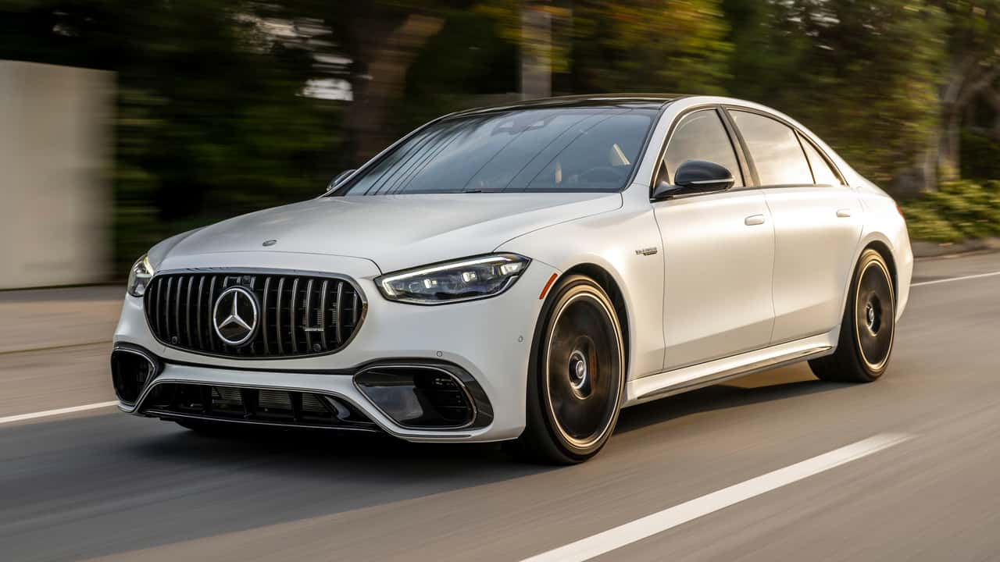
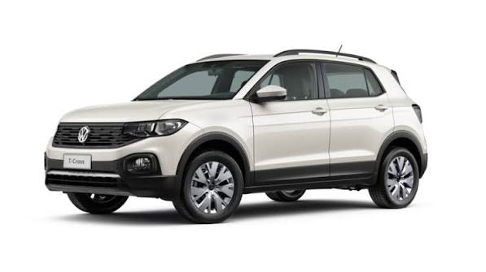
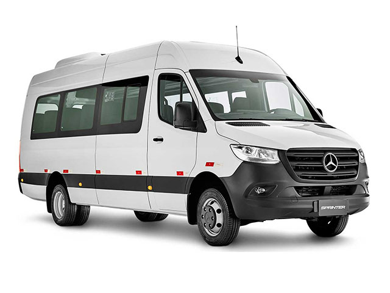
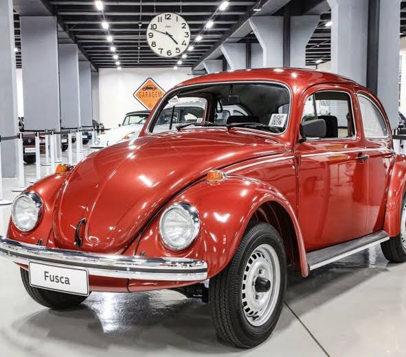

Mais econômico
Mais econômicoGrupo A
Fiat Mobi
Compacto, econômico e ideal para deslocamentos diários.
- 5 lugares
- Manual
- 2 malas
- Ar
R$ 119 / diária
ReservarMais econômicoGrupo A
Compacto, econômico e ideal para deslocamentos diários.
 Popular
PopularGrupo A+
Ótimo equilíbrio entre custo, conforto e tecnologia.
 Padrão
PadrãoGrupo B
Desempenho confiável e interior com acabamento mais refinado.
 Sedã
SedãGrupo C
Mais espaço para passageiros e conforto em viagens de rotina.

LuxoPremium
Acabamento sofisticado, conforto premium e presença no trânsito.

Mais procuradoGrupo C+
Visual robusto, alto conforto e ótimo comportamento urbano.
 7 lugares
7 lugaresGrupo D
Ideal para viagens em família, com muito espaço e conforto.

TransporteGrupo E
Espaço amplo para grupo, malas e deslocamentos mais longos.
 Carga leve
Carga leveGrupo U
Versátil para trabalho, deslocamento e uso em estradas de terra.

RetrôEspecial
Uma opção exclusiva para quem quer um toque vintage na viagem.